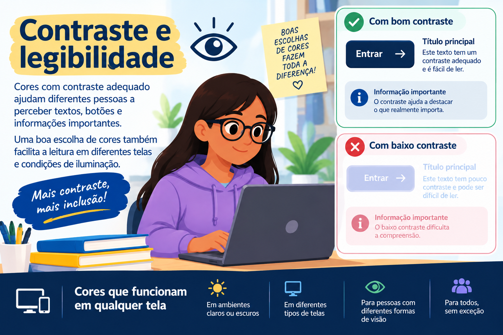

Inclusão
A tecnologia pode ajudar a ampliar o acesso à informação, educação, comunicação e serviços.
TECNOLOGIA • INCLUSÃO • ACESSIBILIDADE
A acessibilidade digital ajuda a garantir que diferentes pessoas possam utilizar sites, aplicativos, computadores e outros recursos tecnológicos.
01 — SOBRE
A acessibilidade digital significa criar tecnologias, sites e aplicativos que possam ser utilizados pelo maior número possível de pessoas, incluindo pessoas com diferentes necessidades.
A tecnologia pode ajudar a ampliar o acesso à informação, educação, comunicação e serviços.
Recursos acessíveis permitem que mais pessoas realizem atividades digitais com independência.
Uma internet acessível permite que diferentes pessoas participem da vida digital.
02 — BARREIRAS
Alguns sites e aplicativos ainda apresentam obstáculos que podem dificultar o acesso e a utilização da tecnologia.
Textos com pouco contraste podem dificultar a leitura.
Pessoas que utilizam leitores de tela podem ter dificuldade para compreender imagens sem texto alternativo.
Menus confusos e páginas sem uma ordem lógica podem dificultar a navegação.
03 — SOLUÇÕES
Pequenas decisões no desenvolvimento podem fazer uma grande diferença para a acessibilidade.
Todos os botões, links e campos importantes devem poder ser acessados pelo teclado.
Imagens importantes devem possuir descrições que expliquem seu conteúdo.
Cores com bom contraste ajudam na leitura e na identificação das informações.
Vídeos podem utilizar legendas para facilitar o acesso ao conteúdo falado.
04 — INCLUSÃO
Pessoas com deficiência motora podem utilizar diferentes formas de interação com a tecnologia. Por isso, sites acessíveis devem oferecer alternativas de navegação.
Uma página acessível deve permitir que a pessoa utilize diferentes formas de interação.
Este botão aumenta o destaque dos elementos interativos e facilita a navegação pela página.
Pressione Tab para navegar pelos elementos da página e Enter para selecionar.
05 — GALERIA
Veja alguns exemplos de recursos que ajudam a tornar experiências digitais mais acessíveis.
Uma página acessível não deve depender apenas do mouse.
Pessoas que utilizam o teclado precisam conseguir acessar menus, botões, links e formulários.
Por isso, os elementos interativos devem seguir uma ordem lógica e apresentar um indicador visual de foco.


Cores com contraste adequado ajudam diferentes pessoas a perceber textos, botões e informações importantes.
Uma boa escolha de cores também facilita a leitura em diferentes telas e condições de iluminação.
As legendas permitem que pessoas surdas ou com perda auditiva acompanhem o conteúdo falado de um vídeo.
Elas também são úteis para quem está em um ambiente barulhento ou precisa assistir ao conteúdo sem utilizar o áudio.

06 — ÁUDIO
O áudio apresenta uma breve reflexão sobre a importância de criar tecnologias que possam ser utilizadas por todas as pessoas.
Clique no botão abaixo para ouvir o áudio.
Olá! Seja bem-vindo a mais um episódio do nosso podcast. Hoje vamos falar sobre um assunto muito importante: a acessibilidade na tecnologia. Quando pensamos em tecnologia, normalmente pensamos em computadores, celulares, aplicativos, sites e redes sociais. Mas você já parou para pensar se todas as pessoas conseguem utilizar essas tecnologias da mesma forma? A verdade é que não. Cada pessoa possui necessidades e formas diferentes de interagir com o mundo. Algumas pessoas podem ter dificuldades para enxergar, ouvir, compreender textos ou utilizar um mouse e um teclado. Por isso, a tecnologia deve ser criada pensando em todas as pessoas, e não apenas em um único tipo de usuário. Um exemplo simples é uma página de internet. Uma página acessível deve considerar diferentes formas de enxergar, ouvir, compreender e navegar pelo conteúdo. Para pessoas com dificuldades de visão, por exemplo, é importante utilizar textos com tamanho adequado, cores com bom contraste e imagens com descrições alternativas. Essas descrições ajudam os leitores de tela a explicar o que aparece em uma imagem. Para pessoas surdas ou com perda auditiva, os vídeos podem ter legendas. Assim, mesmo sem ouvir o áudio, a pessoa consegue acompanhar as informações apresentadas. As legendas também podem ajudar quem está em um lugar muito barulhento ou não pode utilizar o som naquele momento. Outro ponto importante é a navegação. Um site deve ser organizado de forma clara, com botões fáceis de identificar e informações bem distribuídas. Além disso, é importante permitir que a pessoa navegue utilizando diferentes recursos, como o teclado ou tecnologias assistivas. A acessibilidade também está relacionada à compreensão. Textos muito complicados, instruções confusas e páginas desorganizadas podem dificultar o acesso à informação. Por isso, utilizar uma linguagem clara e apresentar o conteúdo de maneira organizada também faz parte de uma tecnologia mais inclusiva. Criar uma tecnologia acessível não significa criar algo apenas para pessoas com deficiência. Na verdade, quando um site ou aplicativo é mais acessível, todos podem se beneficiar. Por exemplo, uma legenda pode ajudar uma pessoa surda, mas também pode ser útil para alguém que está em um ônibus e não consegue ouvir o áudio. Um texto bem organizado pode ajudar uma pessoa com dificuldade de compreensão, mas também facilita a vida de qualquer usuário. Por isso, acessibilidade não deve ser vista como um detalhe ou como algo que pode ser adicionado depois. Ela deve fazer parte do desenvolvimento da tecnologia desde o começo. No final das contas, a tecnologia só cumpre realmente o seu papel quando consegue alcançar o maior número possível de pessoas. Criar para todos é pensar nas diferenças, respeitar as necessidades de cada pessoa e garantir que ninguém fique de fora. E é justamente essa a importância da acessibilidade: transformar a tecnologia em uma ferramenta que realmente esteja disponível para todos. Obrigado por acompanhar este episódio. Até a próxima!
07 — VÍDEO
O vídeo apresenta a importância de pensar na acessibilidade desde o desenvolvimento de uma tecnologia.
Vídeo sobre a importância da acessibilidade digital e da inclusão na tecnologia.
Acessibilidade Universal: uma tecnologia para todos
Olá! Hoje vamos falar sobre um assunto cada vez mais
importante no mundo digital: a acessibilidade na tecnologia.
Quando pensamos em tecnologia, muitas vezes imaginamos
computadores, celulares, aplicativos e páginas da internet.
Mas existe uma pergunta fundamental que precisamos fazer:
será que toda essa tecnologia foi criada pensando em todas
as pessoas?
A tecnologia deve ser criada para todas as pessoas.
Afinal, a verdadeira inovação só acontece quando ninguém
fica para trás na era digital.
Cada pessoa possui uma maneira diferente de enxergar,
ouvir, compreender e navegar pelo mundo.
Por isso, uma página acessível precisa considerar essas
diferentes necessidades.
Algumas pessoas possuem baixa visão ou cegueira e podem
precisar de recursos específicos para utilizar a tecnologia.
Por isso, páginas acessíveis podem oferecer alto contraste,
fontes que podem ser ampliadas e suporte para leitores
de tela.
Esses recursos tornam as informações mais fáceis de perceber
e permitem que mais pessoas tenham autonomia ao acessar
um conteúdo.
Agora, pense nas diferentes formas de ouvir.
Nem todas as pessoas conseguem acompanhar um conteúdo
apenas pelo áudio.
Por isso, vídeos devem contar com legendas precisas e,
quando necessário, recursos como a interpretação em Libras.
Dessa forma, pessoas surdas ou com perda auditiva também
podem compreender e participar dos conteúdos digitais.
Também precisamos pensar nas diferentes formas de compreender.
Uma página muito poluída, com excesso de informações,
textos confusos e menus difíceis de encontrar, pode tornar
a navegação complicada.
Um design mais simples, organizado e previsível, com
linguagem clara, textos objetivos e ícones que ajudam
na compreensão, facilita o acesso para muitas pessoas.
E não podemos esquecer das diferentes formas de navegar.
Nem todo mundo utiliza um mouse da mesma maneira, ou
sequer consegue utilizá-lo.
Algumas pessoas utilizam teclado, trackball, comandos
alternativos ou outros dispositivos adaptativos.
Por isso, permitir a navegação completa pelo teclado
e oferecer compatibilidade com tecnologias assistivas
é fundamental para garantir mais autonomia.
No final, acessibilidade não é apenas uma característica
extra de um site ou aplicativo.
Ela deve fazer parte do planejamento desde o começo.
Quando criamos uma tecnologia pensando em diferentes
pessoas e diferentes necessidades, estamos construindo
um ambiente digital mais democrático.
Uma web acessível é uma web para todos.
Projetar para a acessibilidade é construir um mundo
digital mais humano, mais inclusivo e onde ninguém
precise ficar para trás.